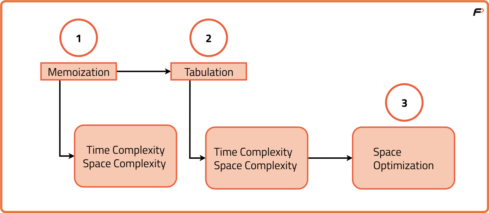
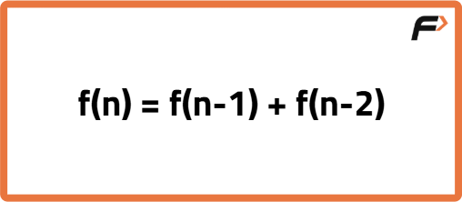
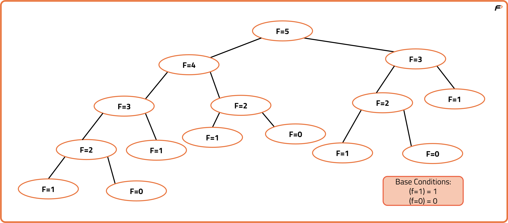
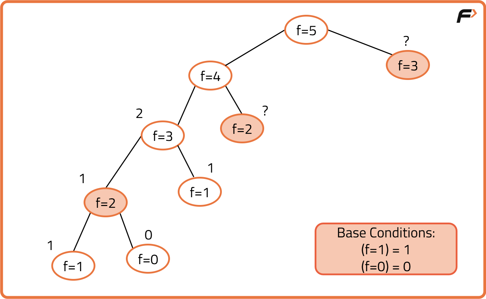
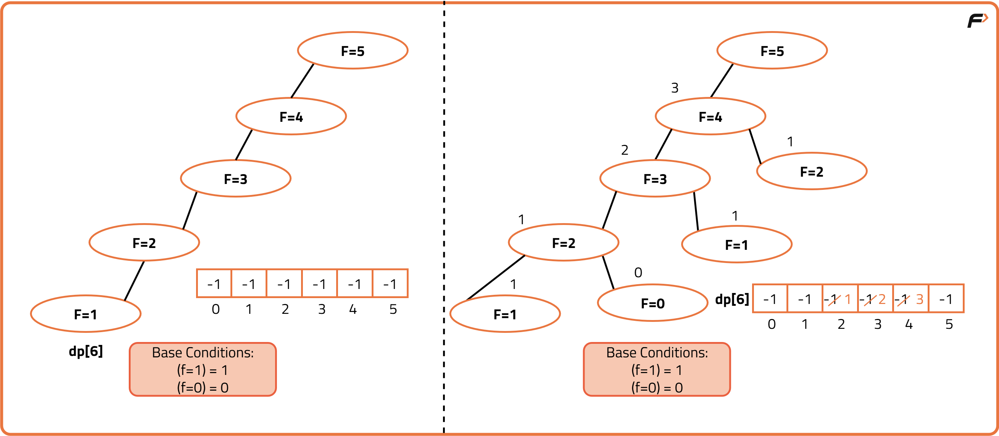
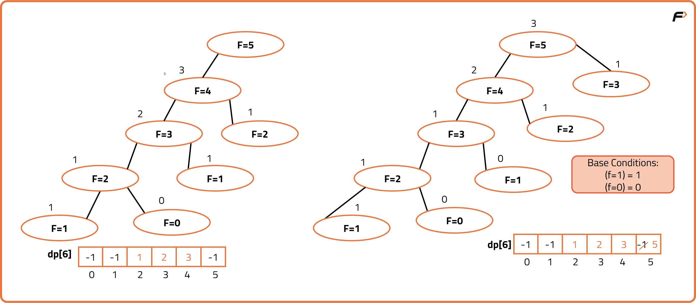
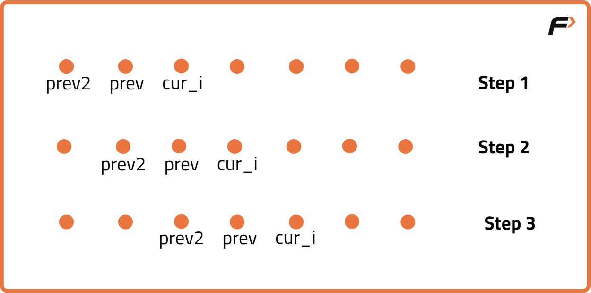

Dynamic Programming Introduction
Problem Statement: Introduction To Dynamic Programming
Dynamic Programming can be described as storing answers to various sub-problems to be used later whenever required to solve the main problem.
The two common dynamic programming approaches are:
- Memoization: Known as the “top-down” dynamic programming, usually the problem is solved in the direction of the main problem to the base cases.
- Tabulation: Known as the “bottom-up '' dynamic programming, usually the problem is solved in the direction of solving the base cases to the main problem
Note: The base case does not always mean smaller input. It depends upon the implementation of the algorithm.

We will be using the example of Fibonacci numbers here. The following series is called the Fibonacci series:
0,1,1,2,3,5,8,13,21,...
We need to find the nth Fibonacci number, where n is based on a 0-based index. Every ith number of the series is equal to the sum of (i-1)th and (i-2)th number where the first and second number is given as 0 and 1 respectively.
Part - 1: Memoizaton
As every number is equal to the sum of the previous two terms, the recurrence relation can be written as:

If we draw the recursive tree for n=5, it will be:

If there are two recursive calls inside a function, the program will run the first call, finish its execution and then run the second call. Due to this reason, each and every call in the recursive tree will be executed. This gives the recursive code its exponential time complexity. If we can store the values of sub-problems in the first time, then we can simply find its value in constant time whenever we need it. This technique is called Memoization. The cases which are solved again and again in recursion are called overlapping sub-problems.

Steps to memoize a recursive solution:
Any recursive solution to a problem can be memoized using these three steps:
- Create a dp[n+1] array initialized to -1.
- Whenever we want to find the answer of a particular value (say n), we first check whether the answer is already calculated using the dp array. If yes, simply return the value from the dp array.
- If not, then we are finding the answer for the given value for the first time, we will use the recursive relation as usual but before returning from the function, we will store the solution in our dp array.


Code
#include <bits/stdc++.h>
using namespace std;
class Solution {
public:
// Function to calculate Fibonacci using memoization
int fib(int n, vector<int>& dp) {
// If base case return n
if (n <= 1) return n;
// If already computed, return stored value
if (dp[n] != -1) return dp[n];
// Otherwise compute and store
dp[n] = fib(n - 1, dp) + fib(n - 2, dp);
return dp[n];
}
};
int main() {
int n = 10;
vector<int> dp(n + 1, -1);
Solution sol;
cout << sol.fib(n, dp);
return 0;
}
Part -2: Tabulation
Tabulation is a ‘bottom-up’ approach where we start from the base case and reach the final answer that we want. Tabulation helps in optimizing the solution by preventing additional stack space used during recursion.
Steps to convert Recursive Solution to Tabulation one.
- Declare a dp[] array of size n+1.
- First initialize the base condition values, i.e i=0 and i=1 of the dp array as 0 and 1 respectively.
- Set an iterative loop that traverses the array( from index 2 to n) and for every index set its value as dp[i-1] + dp[i-2].
Code
#include <bits/stdc++.h>
using namespace std;
class Solution {
public:
// Function to calculate Fibonacci using tabulation
int fib(int n) {
// If n is 0 or 1, return n
if (n <= 1) return n;
// Create dp array
vector<int> dp(n + 1, 0);
// Initialize base cases
dp[0] = 0;
dp[1] = 1;
// Fill dp array iteratively
for (int i = 2; i <= n; i++) {
dp[i] = dp[i - 1] + dp[i - 2];
}
// Return final answer
return dp[n];
}
};
int main() {
int n = 10;
Solution sol;
cout << sol.fib(n);
return 0;
}
Part 3: Space Optimization
If we closely look at the relation,
dp[i] = dp[i-1] + dp[i-2]
we see that for any i, we do need only the last two values in the array. So is there a need to maintain a whole array for it? The answer is ‘No’. Let us call dp[i-1] as prev and dp[i-2] as prev2. Now understand the following illustration.

- Each iteration’s cur_i and prev becomes the next iteration’s prev and prev2 respectively.
- Therefore after calculating cur_i, if we update prev and prev2 according to the next step, we will always get the answer.
- After the iterative loop has ended we can simply return prev as our answer.
Code
#include <bits/stdc++.h>
using namespace std;
class Solution {
public:
int fib(int n) {
// If n is 0 return 0
if(n == 0) return 0;
// If n is 1 return 1
if(n == 1) return 1;
// prev2 stores fib(n-2)
int prev2 = 0;
// prev stores fib(n-1)
int prev = 1;
// curr stores current fib
int curr;
// Loop from 2 to n
for(int i = 2; i <= n; i++) {
// Calculate current fib
curr = prev + prev2;
// Update prev2
prev2 = prev;
// Update prev
prev = curr;
}
// Return final answer
return prev;
}
};
int main() {
Solution s;
int n = 10;
cout << s.fib(n);
return 0;
}